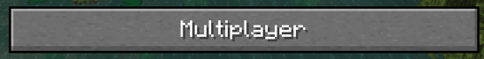

Hypixel é um dos maiores servidores de Minecraft do mundo,
oferecendo uma variedade de modos de jogo emocionantes.
Com mais de 20 mini-jogos disponíveis, incluindo SkyWars,
BedWars e Build Battle, os jogadores podem desfrutar de uma
experiência multiplayer repleta de ação. O servidor é conhecido
por sua comunidade ativa, eventos regulares e atualizações constantes,
proporcionando uma experiência divertida e envolvente para os jogadores
de Minecraft.
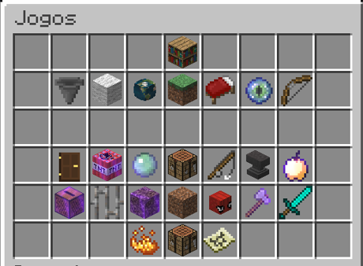
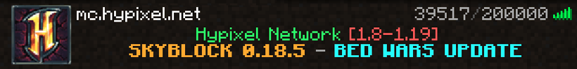
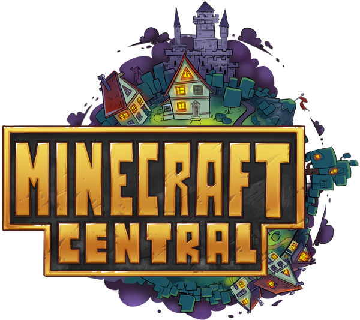
MC Central é um servidor de Minecraft popular que oferece uma
variedade de modos de jogo para os jogadores desfrutarem.
Com modos como Survival Games, SkyWars, PvP e muito mais, os
jogadores têm uma ampla gama de opções para escolher. O servidor
é conhecido por sua jogabilidade fluida, comunidade acolhedora e eventos
regulares. Com uma grande base de jogadores e uma variedade de modos divertidos,
MC Central é uma excelente opção para quem procura diversão no Minecraft.
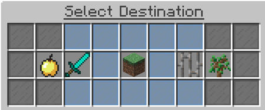
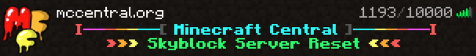
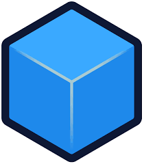
CubeCraft é um servidor de Minecraft popular conhecido por
sua grande variedade de minigames e modos de jogo exclusivos.
Com opções como SkyWars, EggWars, Capture the Flag e muito mais,
os jogadores têm inúmeras opções de diversão. O servidor se destaca
por sua jogabilidade suave, recursos personalizados e uma comunidade
ativa. Com atualizações frequentes e eventos emocionantes, o CubeCraft
oferece uma experiência empolgante para os fãs de Minecraft.
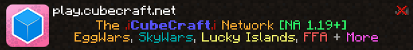
Hylex é um servidot de Minecraft que abriu faz pouco tempo e já está fazendo bastante sucesso
, servidor Brasileiro cujo tem diversos modos de jogo com SkyWars e BedWars, este servidor tem
seus modos de jogo dele, mas o maior sucesso é este dois, cujo todos os servidores tem, mas cada
um tem seu diferencial, e nesse é mais focado no pvp e nos jogadores de Minecraft que não tem conta
original e querem se divertir.
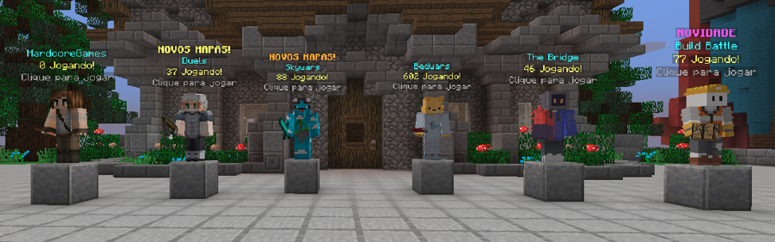
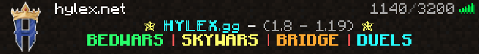
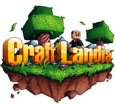
CraftLandia é um servidor de Minecraft bastante popular,
conhecido por sua vasta comunidade e ampla gama de modos
de jogo. Com opções como Survival, SkyBlock, KitPvP e muito
mais, os jogadores têm muitas oportunidades para explorar e
se divertir. O servidor se destaca por suas atualizações regulares,
eventos temáticos e recursos personalizados. Com uma comunidade ativa
e recursos robustos, o CraftLandia oferece uma experiência envolvente
para jogadores de todos os níveis.
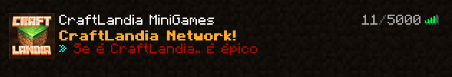
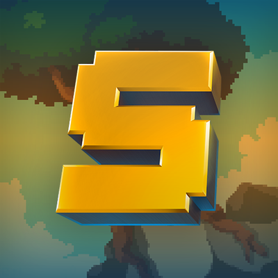
RedeSky é um servidor de Minecraft especializado no modo de jogo SkyBlock,
onde os jogadores começam em uma ilha flutuante e precisam sobreviver e prosperar.
Com uma comunidade ativa e recursos exclusivos, o servidor oferece uma experiência
imersiva. Os jogadores podem participar de desafios, explorar ilhas personalizadas,
negociar com outros jogadores e competir por classificações. A RedeSky é conhecida
pela qualidade de seus servidores e pelo apoio constante da equipe de suporte
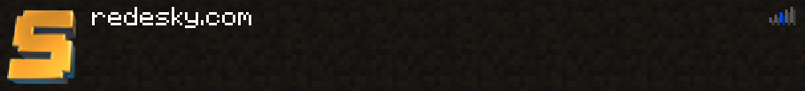
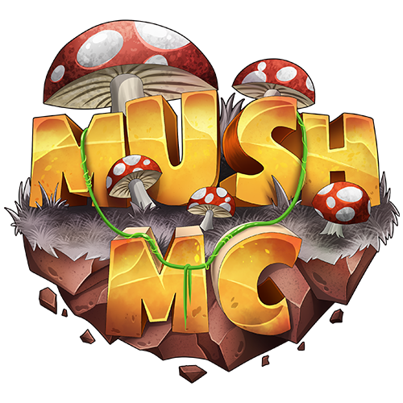
Mush é o maior servidor da america latina, contem os mesmo modos de jogo
e esse servidor vem crescendo cada vez mais por conta dos modos de bedwars
e fullpvp que se encontram nele, atraindo o publico do Minecraft tanto do jogo
original e do pirata, apenas focado na sua diversão.
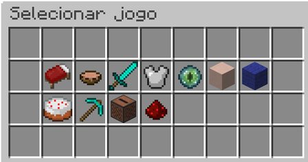
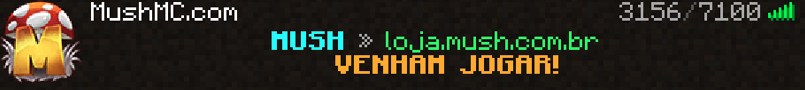
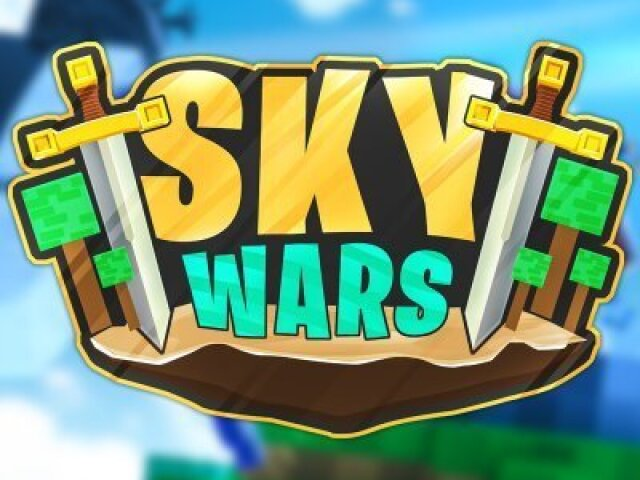
O SkyWars é um modo de jogo competitivo do Minecraft onde os jogadores batalham
em ilhas flutuantes. Eles exploram baús em busca de equipamentos, enfrentam outros
jogadores e tentam ser os últimos sobreviventes. O jogo pode ser jogado individualmente
ou em equipe, exigindo estratégia e habilidade para alcançar a vitória.
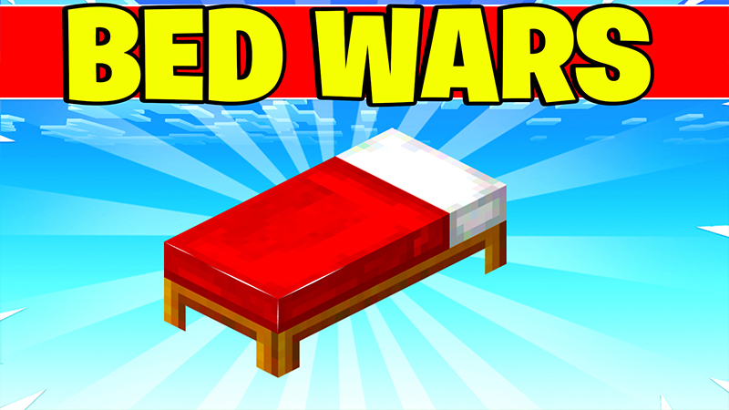
O BedWars é um modo de jogo popular no Minecraft, onde os jogadores formam
equipes e lutam para proteger suas camas e destruir as dos oponentes. Eles
devem coletar recursos, construir defesas e atacar as bases inimigas. O objetivo
é ser a última equipe com sua cama intacta, eliminando os oponentes e conquistando
a vitória. O BedWars oferece uma experiência estratégica e cooperativa emocionante
no mundo do Minecraft.
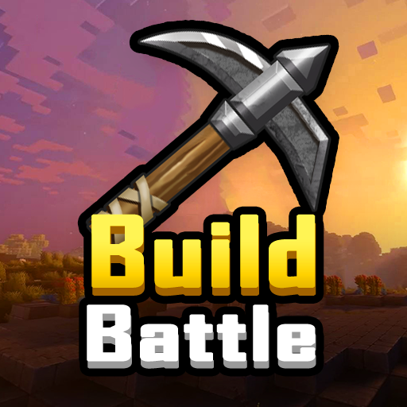
O Build Battle é um modo de jogo criativo do Minecraft,
onde os jogadores competem para construir as melhores criações
dentro de um tempo limitado. Cada rodada tem um tema específico e
os jogadores devem usar sua imaginação e habilidades de construção
para criar algo único. Após o término do tempo, as construções são
avaliadas e classificadas pelos outros jogadores. O Build Battle é um
modo divertido e desafiador que testa a criatividade e o talento dos
jogadores no mundo da construção do Minecraft.
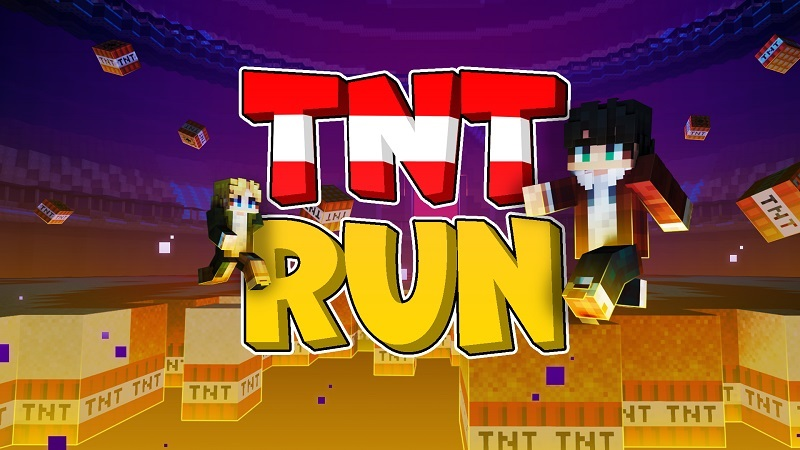
O TNT Run é um modo de jogo emocionante do Minecraft, onde os
jogadores correm em uma plataforma feita de blocos de TNT.
Conforme correm, os blocos são ativados e explodem, criando
buracos no chão. O objetivo é ser o último jogador a cair para fora
da plataforma. É um jogo rápido e frenético que requer reflexos rápidos
e habilidade para evitar a destruição iminente. O TNT Run oferece diversão
explosiva e competitiva para os jogadores no Minecraft.
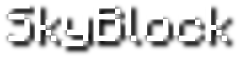
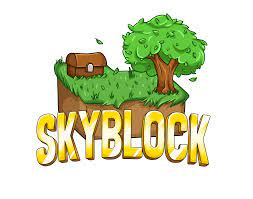
O SkyBlock é um modo de jogo popular no Minecraft em que os jogadores
começam em uma ilha flutuante pequena e isolada. Eles devem usar os recursos
limitados disponíveis para expandir sua ilha, cultivar alimentos, criar itens
e explorar o ambiente ao redor. O objetivo é criar uma ilha próspera e autossuficiente,
superando os desafios e alcançando metas estabelecidas. O SkyBlock oferece uma experiência de
sobrevivência única, onde a criatividade e a eficiência são fundamentais para o sucesso.